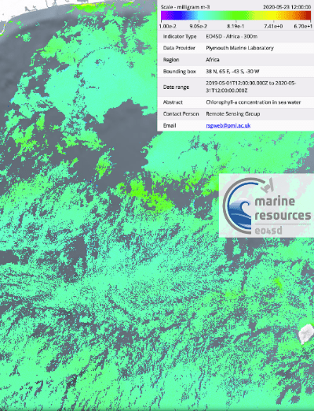
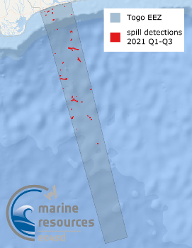
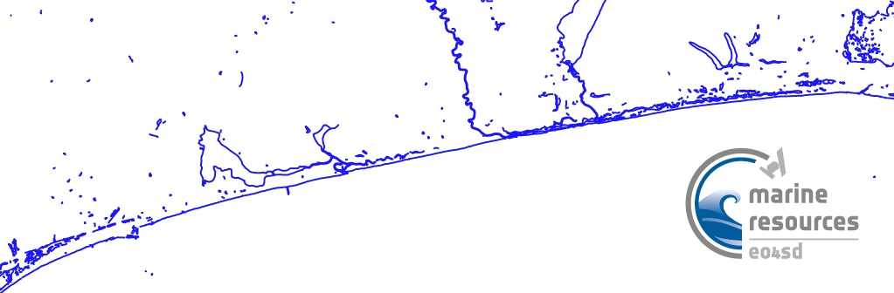
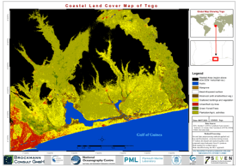

| Title | Quicklook | Description | Place | Time Period of Content | Download |
|---|---|---|---|---|---|
| Water quality for large geographical regions |
 (194 kB) |
Example of a Chl-a map for West Africa | Togo/Benin Gulf Of Guinea |
May 23, 2020 |
Example in GIS portal User Guide (PDF, 2.1MB) |
| Marine Pollution, Togo, Jan-Sept 2021. Service - Oil Spill Detection |  (157 KB) |
Oil Spill Detection maps include oil spill vector data and the backscatter coefficient SAR images of Togo. The data are provided in Google Maps KML format. | Togo | Jan-Sept 2021 | Oil Spill Detection vector data are available on request. Please contact: anku@pml.ac.uk Metadata (XML, 4KB) |
| Togo and Benin 2019 Shorelines |
 43 KB |
Shoreline shapefile was created by temporaly stacking 31 Sentinel-1 SAR images from 2019 then applying statistical edge detection using enhanced Region of Averages method. | Togo and Benin | 20190101 - 20191230 |
Shapefile (ZIP, 580.8 KB) World file (JGW, 102 B) Metadata (XML, 3.2 KB) |
| Togo Historical Shorelines, Shoreline Change Rates (2000-2020) and 10- and 20-year forecast |
 (172 KB) |
This layer consists of data used to map shoreline change rates in Togo produced by the National Oceanography Centre for the Marine and Coastal Resources project.This is under the initiative Earth Observation for Sustainable Development (EO4SD) by the European Space Agency. Geodatabase contains: Admin boundary - administrative boundary of coastline Togo Shorelines - Each shoreline delineated from the 20-year period Forecast 10 [years] Forecast 20 [years] Forecast Uncertainty 10 [years] Forecast Uncertainty 20 [years] Shoreline change rates - transects Historical shorelines between 2000-2020 can be visualised, created by annual median composites of Landsat 7, 8 and Sentinel 2 imagery which delineates the approximate mean high water mark. Methods are inspired by Coastsat, a Google Earth Engine-enabled open-source software toolkit that delineates shorelines at any sandy coastline worldwide from over 30 years of publicly available satellite imagery (https://github.com/kvos/CoastSat). |
Togo | 2000 - 2020 |
Shapefiles (ZIP, 1.6 MB) GDB file (ZIP, 885,1 KB) Metadata (XML, 7.7 KB) |
| Togo Coastal Landcover (2020) |
 (2.3 MB) |
This is the Togo land-cover classification data (2020) produced by Brockmann Consult GmbH for the Marine and Coastal Resources project. This is under the initiative Earth Observation for Sustainable Development (EO4SD) by the European Space Agency.This raster file is generated from sentinel-1 (12 products; 2019), 1 mosaic Sentinel-2 (4 products; 2 each from 2019 and 2020). The supervised classification method used is the Maximum Likelihood Classification (MLC). The land-cover sample data (training areas) used were desktop-generated with support from high-resolution Google-Earth images. |
Togo | 2019 - 2020 |
GIS data (TIF, 57.2 MB) Metadata (XML, 3.9 KB) |
| Togo and Benin Coastal Landcover (2020) |  (2.5 MB) |
This is the Togo and Benin land-cover classification data (2020) produced by Brockmann Consult GmbH for the Marine and Coastal Resources project.This is under the initiative Earth Observation for Sustainable Development (EO4SD) by the European Space Agency. This raster file is generated from sentinel-1 (12 products; 2019), 1 mosaic Sentinel-2 (4 products; 2 each from 2019 and 2020). The supervised classification method used is the Maximum Likelihood Classification (MLC). The land-cover sample data(training areas) used were desktop-generated with support from high-resolution Google-Earth images. |
Togo and Benin | 2019 - 2020 |
GIS data (TIF, 182.7 MB) Metadata (XML, 3.9 KB) |